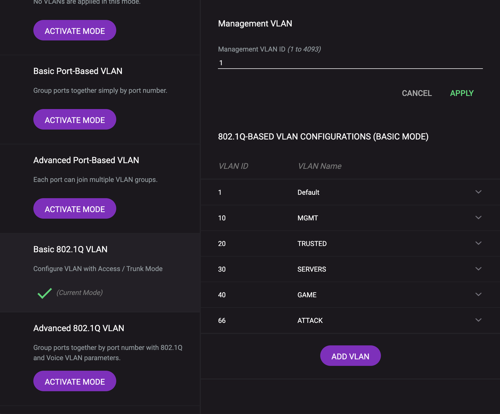
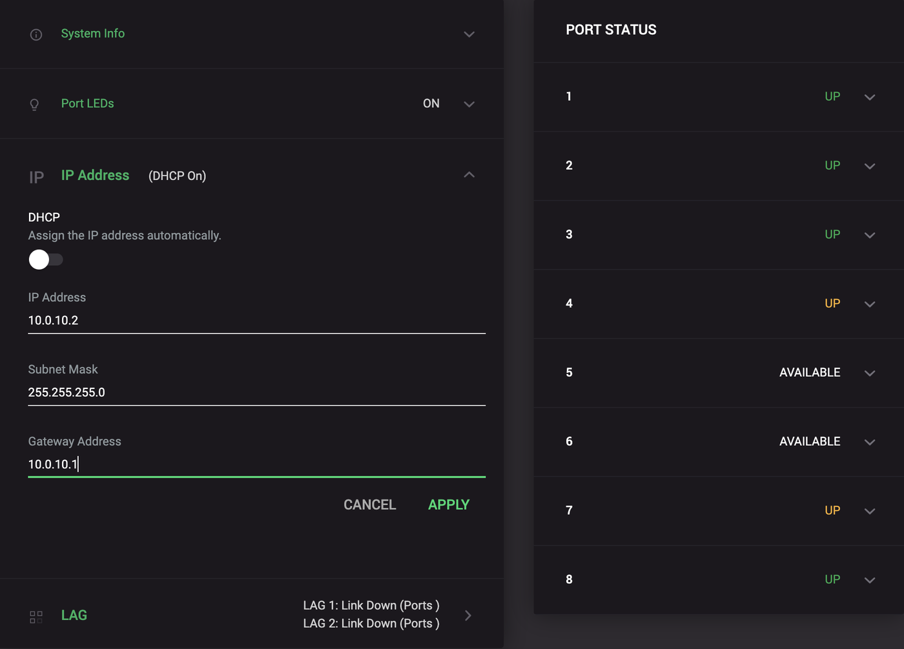
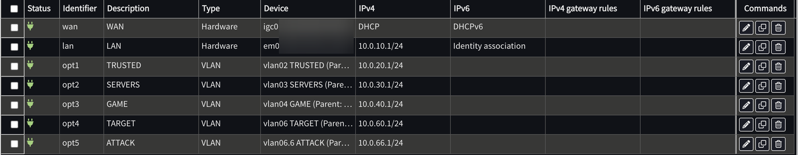
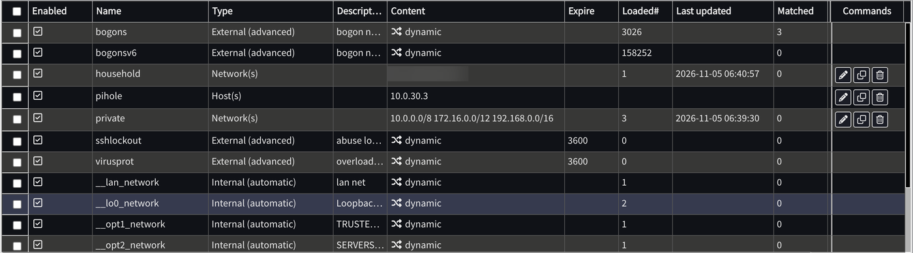
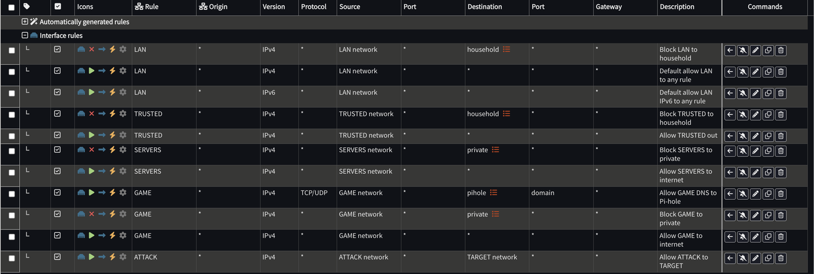
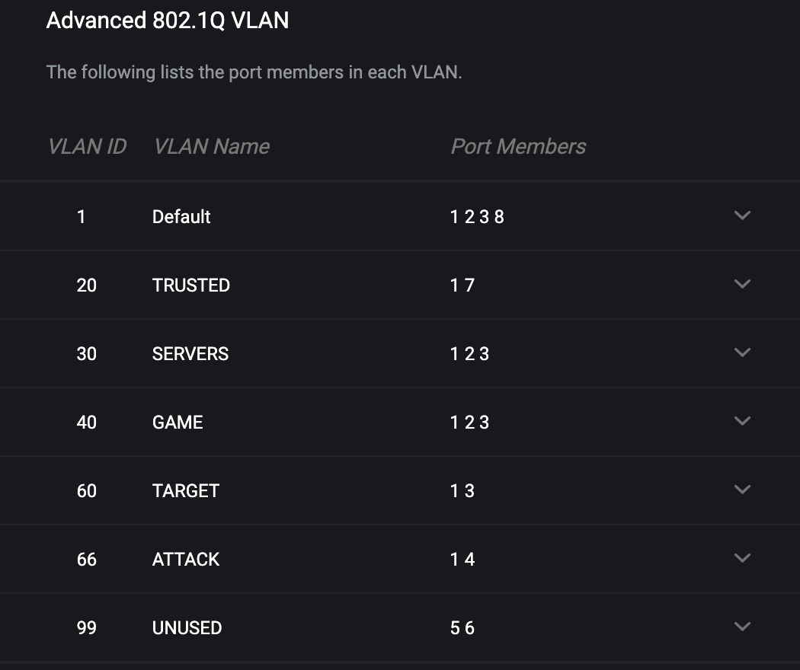
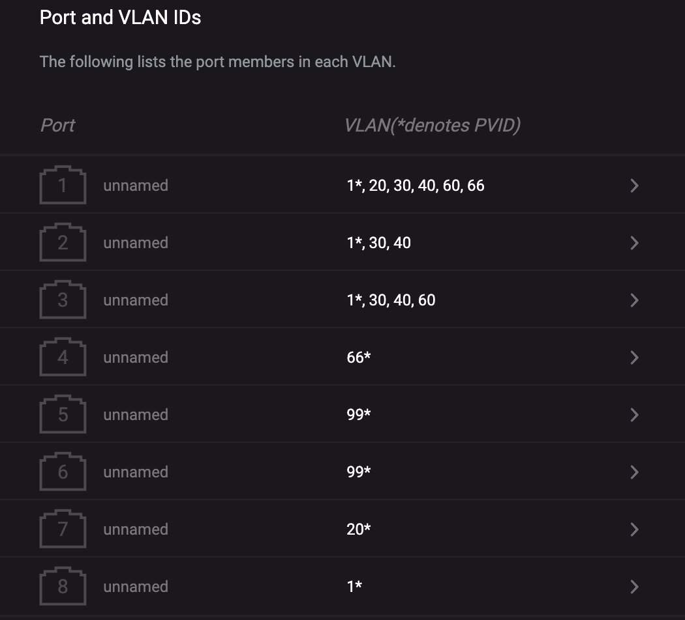
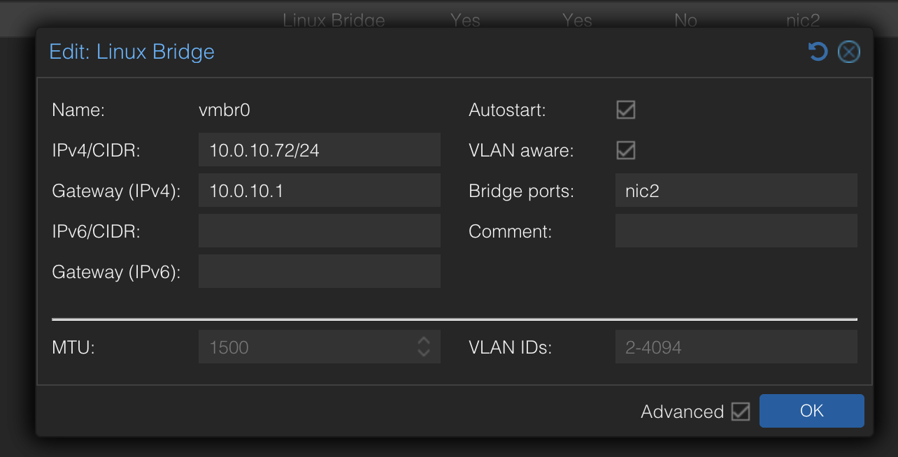
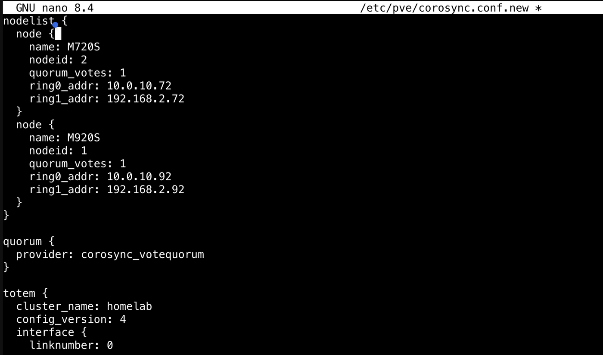
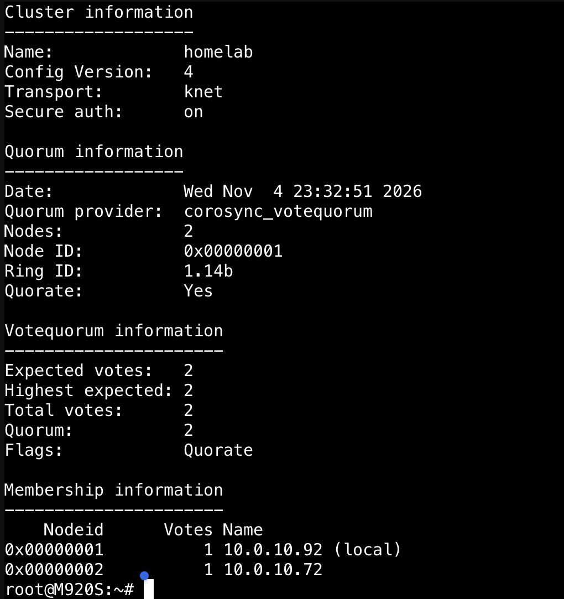

Homelab part 5: VLANs across the switch, firewall, and cluster
Up until this point, the whole lab was one flat network on OPNsense's default 192.168.1.0/24. The firewall, the switch, and both Proxmox nodes all sat on it together. In one night, I moved everything over to 10.0.x.0/24 and split the lab into VLANs, which meant changing the switch, OPNsense, and the Proxmox cluster all at once.
The first try on the switch
My first attempt was the GS308E's Basic 802.1Q mode with management on its own VLAN 10. That isn't how it ended up. In the final setup, management stays on VLAN 1 untagged and the switch runs Advanced 802.1Q instead.


Renumbering the switch
Before anything else, I turned off DHCP on the switch and gave it a static address on the new management subnet, with OPNsense as its gateway.


OPNsense interfaces
On OPNsense, I moved LAN to 10.0.10.1/24 and created a VLAN interface on top of it for each of the other networks: TRUSTED, SERVERS, GAME, TARGET, and ATTACK. Each one gets .1 on its own subnet, so OPNsense is the gateway for all of them.


Aliases and rules
To keep the rules readable, I made three aliases first. household is the household network, private is all three RFC 1918 ranges, and pihole is the Pi-hole container.


LAN and TRUSTED get blocked from the household network and are allowed out everywhere else. SERVERS is blocked from every private range, so it can only reach the internet. GAME is the same, except a rule above the block lets it reach Pi-hole on port 53 for DNS. ATTACK can only reach the TARGET network, and TARGET has no rules at all, so nothing on it can start a connection.


Switch VLANs and ports
Back on the switch, I switched to Advanced 802.1Q mode and created the VLANs. Port 1 is the trunk to the firewall and carries all of them. Ports 2 and 3 go to the Proxmox nodes and carry whatever VLANs their guests need, with MGMT untagged for the hosts themselves. The attacker, the gaming PC, and the MacBook are access ports, and the two empty ports are parked on VLAN 99, so nothing plugged into them lands on a real network.


An access port needs two settings to match. Its untagged VLAN controls what the switch sends out to the device, and its PVID controls which VLAN the device's own traffic lands on. If they don't match, traffic only works in one direction.


Every port also starts as an untagged member of VLAN 1, and setting a PVID doesn't remove it. Until I set ports 4 through 7 to excluded on VLAN 1, the attacker port showed as 1, 66*, which meant the Kali box could still see broadcast traffic from the management network, even though its own traffic landed on ATTACK. Now, VLAN 1 is only ports 1, 2, 3, and 8.
Proxmox
On each node, the vmbr0 bridge got its new MGMT address with OPNsense as the gateway, and I turned on VLAN aware so containers can be put on a VLAN just by setting a tag.


Changing the host addresses didn't change the cluster. Corosync was still pointed at the old 192.168.1.x addresses, which you can see with:
pvecm status corosync-cfgtool -s
To fix it, I made a backup and a copy of the config, then edited the copy. I changed each node's ring0_addr to its new MGMT address, left ring1_addr on the direct cable between the nodes, and bumped config_version from 3 to 4.
cp /etc/pve/corosync.conf /root/corosync.conf.bak cp /etc/pve/corosync.conf /etc/pve/corosync.conf.new nano /etc/pve/corosync.conf.new


Saving the file wasn't enough. After moving the new config into place, pvecm status still showed the old addresses, because corosync doesn't pick up the change until it restarts. I restarted it on one node, waited a few seconds, and then did the other:
mv /etc/pve/corosync.conf.new /etc/pve/corosync.conf systemctl restart corosync systemctl restart pve-cluster
The direct link between the nodes kept them talking while the management addresses changed, so the cluster never fully lost quorum. Once both had restarted, pvecm status showed config version 4, with both nodes on the new subnet and the cluster still quorate.


-lychi (2026)